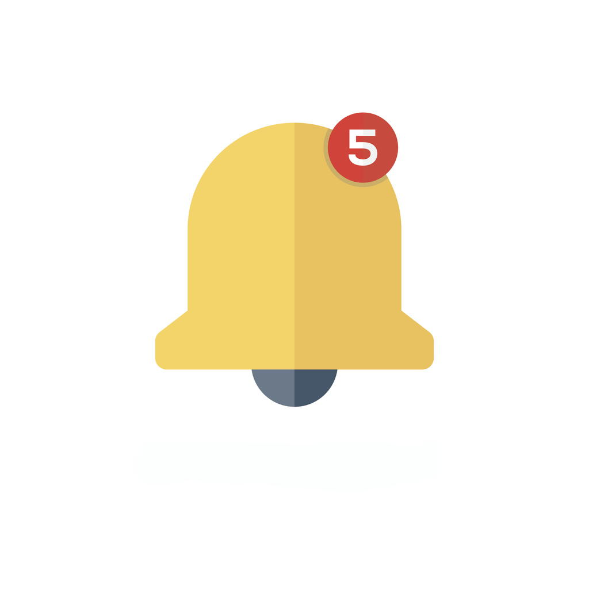

The Practical Utopian
The Practical Utopian
My Advice to Young People of All Ages
By Herb Bowie
tags: art, education, individuals

We live in times of often bewildering choices and rampant temptation. Over 30% of adults in the US are obese, and drug addiction is running wild through our society, especially in rural areas. Average growth in real income has stagnated for American workers, and economic inequality is reaching levels not seen since the Gilded Age. Many pundits are predicting a future marked by both ecological collapse and economic marginalization for an increasingly large segment of our populace.
We can spend many hours debating what we can do to alter the course of society, and to improve our common future. And I'm all for fostering and participating in these sorts of discussions.
Today, though, I'd like to change my focus and offer some advice for what people can and should do to improve their own personal lots in modern life. I have only a few recommendations, and they're rather brief and straightforward, although I won't claim they're easy.
1. Figure Out Who You Are
This is not a one-time study, but an ongoing process.
We've all had stuff happen to us: good, bad, indifferent. And we all carry memories of these things with us, whether we want to or not. But at some point, you have to decide: what do you want to make of these experiences? Which ones do you want to place in the foreground of your life, and which ones do you want to move to the background? What lessons do you move forward with? And what do you want to pursue?
Friends, teachers, therapists, mentors and wisdom teachings can all help with this.
I always thought our house was haunted
But nobody said boo to me
I never did get what I wanted
Now I get what I needIt's been a slow turning
From the inside out
A slow turning
But you come aboutSlow learning
But you learn to sway
A slow turning, baby
Not fade away– John Hiatt, from his song “Slow Turning”
2. Educate Yourself
We live in an amazing time. There is more stuff to learn, and easier access to knowledge, than at any previous period in human history. Whether it's National Public Radio, or our Public Broadcasting System, or your local library, or Wikipedia, there are any number of amazing free resources out there to help make you smarter and better informed.
At the same time, though, there are many ways to waste your time without learning a darned thing. And there is never any shortage of people all too willing to help you do just that, especially if it's to their financial advantage to keep you distracted and stupid.
Why learn?
The first reason is that it's fun. Not just fun in the sense that learning offers a pleasant diversion, but fun in the sense that it can give you a fuller, richer appreciation of the world around you. And it can help you do exciting things that you couldn't do without the appropriate knowledge.
The second reason to learn is that it will help you navigate through time and space. You are on a journey, no matter where you are or how long you've been here, and the more you know, the more profitably you will be able to chart your own future course.
The third reason to learn is to stay relevant. People who know things, and who are able to continually learn new things, will always be of more interest to others than people who know nothing, or who haven't learned anything new in the last 20 years.
And unless you've just won the lottery and are interested only in becoming a hermit, relevance is a very good thing.
Perhaps in the twenty-first century populist revolts will be staged not against an economic elite that exploits people but against an economic elite that does not need them anymore. This may well be a losing battle. It is much harder to struggle against irrelevance than against exploitation.
– Yuval Noah Harari, from his book 21 Lessons for the 21st Century
3. Make Time for Art
Whether it's music, or theatre, or visual arts, or fiction, or film, take some regular time to appreciate some of the best artistic works from our past, as well as contemporary works. And find some people you can discuss them with. And spend some time researching what other people have said about these works, and how they've been influenced by them.
At the end of the day, we are all human beings, and many of our greatest rewards in this life will come from interacting with other humans. Our appreciation of our own humanity, as well as that of others, can be incredibly shallow, or mesmerizingly deep.
And there are no greater teachers of what it means to be human than the towering artists of the past and present, and the timeless works they have fashioned for us.
So whether you study the works of John Coltrane or Emily Dickinson, Leonard Cohen or Pablo Picasso, Frank Capra or Guillermo del Toro, Raymond Chandler or Ursula K. Le Guin, The Beatles or Laura Nyro – make time in your life to allow art to enrich you.
When I started learning about jazz, I wasn't into any kind of art. I had no idea it could have a practical purpose. Now, more than thirty years later, I testify to the power of art, and more specifically jazz, to improve your life – and keep on improving it.
– Wynton Marsalis, from his book Moving to Higher Ground: How Jazz Can Change Your Life
4. Commit to Self-Determination
You have no doubt noticed by now that there are many people and institutions in this world who would like to help you decide what to do with your time and your money and your attention. You may even have come to realize that not all of these people and institutions actually have your best interests at heart. There are all sorts of addictions and diversions available out there, and it's all too easy to succumb to them, to be swept along with the tide of activities created by other people, usually in order to somehow extract money from you without you noticing that they're now a little richer and you're now a little poorer.
The solution? Learn to be mindful rather than mindless. Think about what people are asking you to do, and what their motivations are. And then choose what you think will be best for you.
And learn to say no and walk away.
I shall be telling this with a sigh
Somewhere ages and ages hence:
Two roads diverged in a wood, and I –
I took the one less traveled by,
And that has made all the difference.– Robert Frost, from his poem “The Road Not Taken”
5. Acquire and Conserve A Little Wealth
No, I'm not talking about making your millions while you're still young and then retiring. I'm not recommending that you get rich, or work your butt off for ten or fifteen or twenty years and then withdraw from the world once you've “made it.” And I'm certainly not talking about falling for the latest get-rich-quick scheme to come down the pike.
What I am talking about is having some money in savings, and perhaps even investing some of it, and owning stuff that might reasonably be expected to appreciate in value over time.
Why?
Just because people with money have more options than people without. Sometimes good education costs money. Art sometimes costs money. And if you're going to commit to self-determination, you're sometimes going to have to walk away from jobs and job offers that don't feel right, and it's hard to do that if you don't have at least a little money saved up.
[Dave] Ramsey laments about something more fundamental: the loss of a certain kind of can-do thinking among the people who need it most … he worries that more and more Americans of all political persuasions have become economically paralyzed, and are mistakenly looking to the government to help them solve their problems.
– Tim Alberta, in an article for Politico, interviewing Dave Ramsey, author and creator of The Dave Ramsey Radio Show.
Five Enablers
Why these five recommendations? Because they are all powerful enablers. Self-knowledge, education, artistic appreciation, independent thinking, financial capital: these all form a launching pad for your continued growth. Ignore any one of these, and your growth may be stunted or thwarted, despite your best hopes and intentions.
And if you're not here to grow, then what on earth are you here for?
Published 2018 Oct 31
 Content at Practopian.org is Copyright © 2009 - 2020 by Herb Bowie except where otherwise noted
Content at Practopian.org is Copyright © 2009 - 2020 by Herb Bowie except where otherwise noted